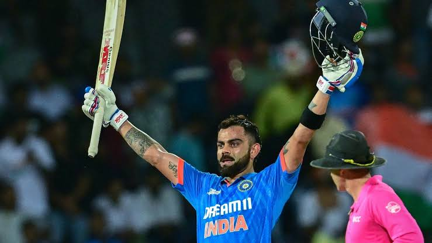

India vs Bangladesh
KING slams with a ton
Virat Kohli's unbeaten century sealed India's fourth win from four World Cup matches as the hosts defeated Bangladesh by seven wickets.
Venue: Maharashtra Cricket Association Stadium, Pune

- Bangladesh won the toss and opt to bat.
- Bangladesh openers had give a good start, after that Indian bowlers resticted them to a low total.
- Bumrah and jadeja bowled a wonderful spells.
- In the chase Indian openers smashed opp bowlers.
- Chase master virat Kohli scored an unbeaten 103*.
- India comfortbaly won the match.
Scores:
- BAN - 256/8 (50 overs)
- IND - 261/3 (41.3 overs)
Player of the Match : Virat Kohli

Match Highlights : Click here
or
Watch here